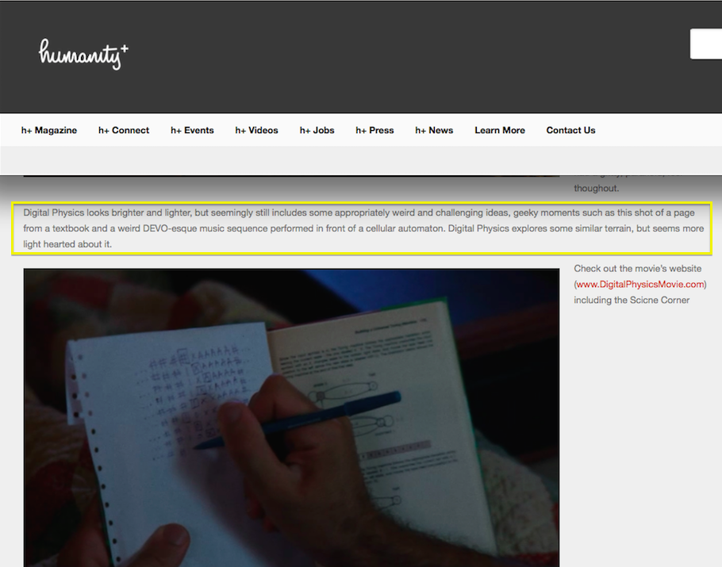
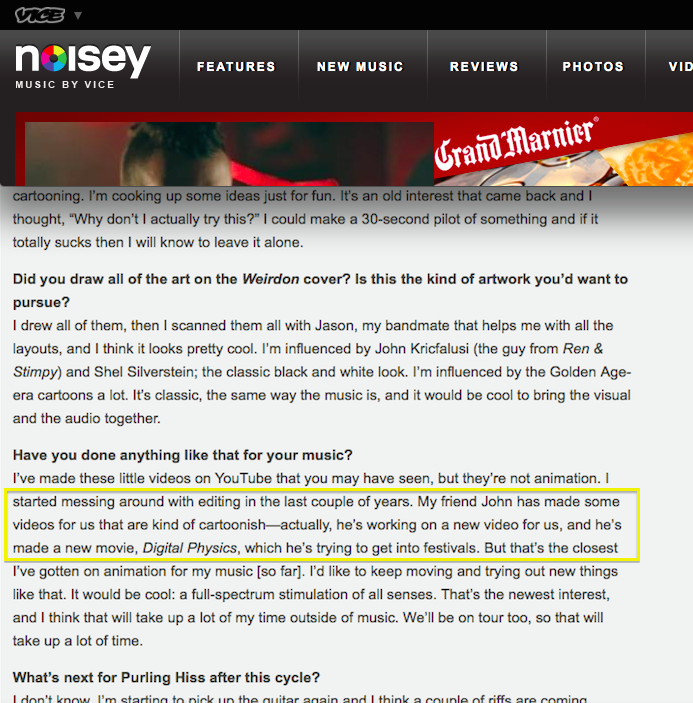
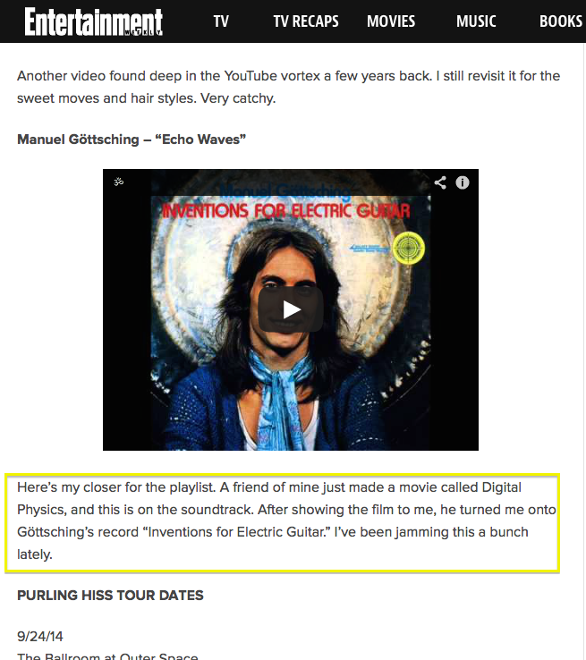
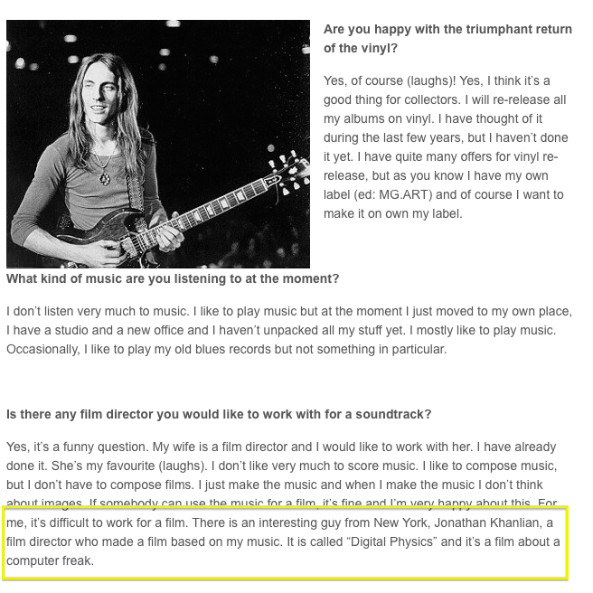

News

December 2022
We mourn the loss of Manuel Göttsching. May your spirit live on through your music.
August 2022
The Santa Fe Institute hosts a private screening of Digital Physics.
July 2016
Digital Physics is released on Vimeo, iTunes, and Amazon. Promotional Trading Cards made!

October 2015
Digital Physics premieres at the Jersey City International Television and Film Festival (October 16-18, 2015) and the First Glance Film Festival in Philadelphia (October 23-25, 2015).


April 2015
The Foundational Questions Institute (FQXi) sponsored an essay contest on the relationship between math and physics. Check out the Digital Physics movie essay!
2014
Writeup in H+ Magazine.
   New Music Video
New music video from director Jon Khanlian. The first single off of Purling Hiss's new album, out on Drag City Records. Watch it here.